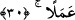

Terazin eğriydi; mükâfat terazisinin doğru olmasını beklersin?
Hıyânette sol ayak kesilmiştin, nasıl da terazin sağ yanından gelir?
A boyu bükülmüş, mükâfat ve mücazat, gölge gibidir,
Elbet gölgen de önüne iki büklüm düşecek.
Yezîd Rakkâşî’nin şöyle dediği rivâyet edilir: “Bir gün Cebrail (a.s.) rengi değişmiş
bir halde Rasûlullah (s.a.)’in huzûruna geldi. Nebi (a.s.):
“Ey Cebrâil, bana ne oluyor ki seni rengi değişmiş halde görüyorum?” buyurdu.
Cebrail (a.s.):
“Ey Muhammed! Sana Allah’ın, ateşi üfleyenlere emir verdiği saatte geldim de
ondan.” dedi.
Rasûlullah (s.a.):
“Cehennemi bana anlat.” dedi.
Cebrâil (a.s.) şu karşılığı verdi:
“Ey Muhammed (a.s.), Allah Teâlâ cehennemi yarattığı vakit onu yedi tabaka kıldı.
Bunların en hafif olanında ateşten yetmiş milyon dağ, her dağda ateşten yetmiş milyon
vâdî, her vâdîde ateşten yetmiş milyon ev, her evde ateşten yetmiş milyon sandık ve her
sandıkta da yetmiş milyon azâb çeşidi vardır.”[176]
En ehven tabakası böyle olan cehennemden Allah’a sığınırız. Bu rivâyet Mişkâtü’l-
envâr’da geçmektedir. Bu rivâyet mübâlağaya yorulmamalıdır, aksine hakîkatin ta
kendisidir. Çünkü tavsif edilen azâb, cennet nimetlerinin mukabilidir. Azab da nimetler
de akıl dâiresinin dışındadır. Şu halde akıllı kişiye gereken, ancak teslim olmak ve
azâbı gerektirecek hallerden sakınmaktır.
30. Îman edip de güzel davranışlarda bulunanlar (bilmelidirler ki) biz, güzel işler
yapanların ecrini zâyi etmeyiz.
“Îman edip de güzel davranışlarda bulunanlar” kalbin amelini ve onun gereklerini
yerine getirmeyi bir araya getirenler bilmelidirler ki “ biz, güzel işler yapanların
ecrini zâyi etmeyiz.”
“es-Sâlihat”, sâliha’nın çoğuludur. Esâsen sıfattır, ancak çoğunlukla şerîatın
güzel gördüğü ameller için kullanılır olmuştur. Bu durumda onun vasıflanana (mevsûf)
ihtiyacı kalmamıştır. Bu kelimenin benzeri Allah’a yaklaşmaya vesîle olan şeyler
hakkında “el-hasene” kelimesidir.
“ el-Ecr”, yapılan işin karşılığı demektir. Burada sevâbın ilimle değil ancak amel
el-Ecr”, yapılan işin karşılığı demektir. Burada sevâbın ilimle değil ancak amel
ile kazanıldığını vurgulamak üzere zamir yerine “amelen” lafzı açıkça getirilmiştir.